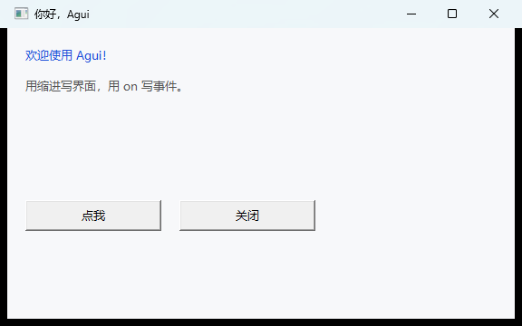
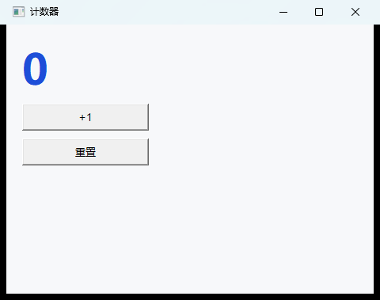
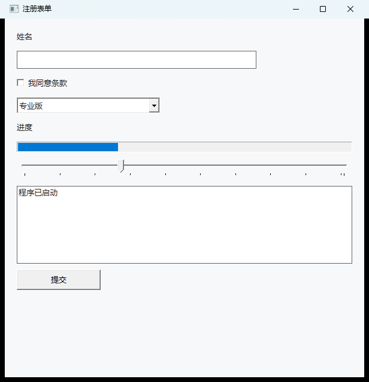
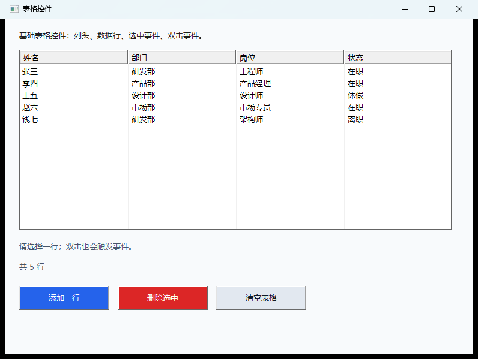
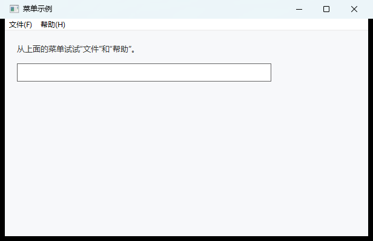
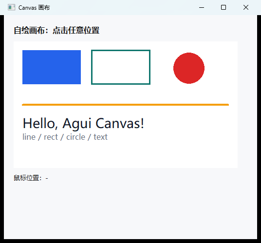
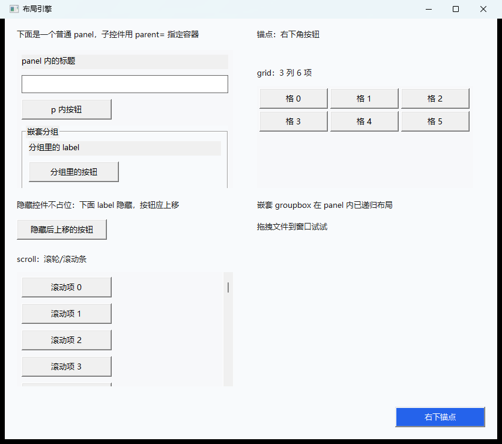
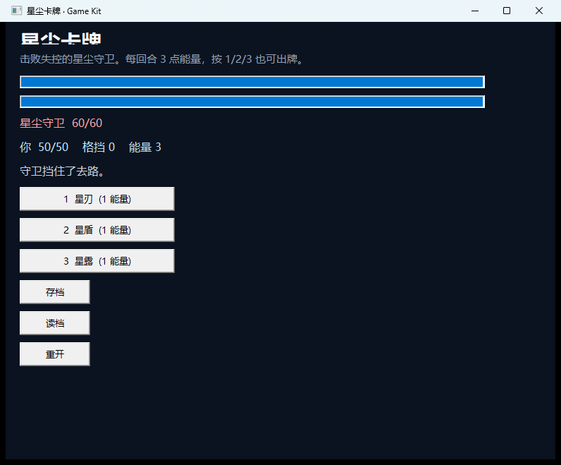

v0.9.1 · MIT · 原生 Windows
把 Windows 小工具，
写成脚本。
Agui 用接近 Python 的缩进语法，直接创建原生 Win32 控件——
不用 Electron，不用浏览器，也不必先啃一套 UI 框架。
一行 agui build 打包成约 12 MB 的单文件 exe，双击就跑。
约 14 MB 绿色包 · 解压即用 · 不写注册表 · 不需要管理员权限
- 原生 Win32 控件
- 12 MB 单文件 exe
- 目标机零运行时
- 中文关键字
- 内置 Game Kit
- MIT 开源
win = window("你好，Agui", w=560, h=320) label("欢迎使用 Agui！", fg="#1D4ED8") name = edit("世界", w=260) greet = button("打招呼", w=150) on greet.click: msgbox("你好，" + name.text + "！") on win.close: print("再见")
三十秒上手
不用装 Go、不用配环境，解压出来的目录里就有解释器。
跑一个示例
语法检查不弹窗，运行立刻出窗口：
agui.exe run examples\hello.ag
打包成分发文件
脚本与资源一起塞进单个 exe，发给谁都能双击运行：
agui.exe build app.ag -o app.exe
写给「就想做个工具」的人
该有的原生能力都在，不该有的构建链一个都没有。
🪟真正的原生控件
窗口、菜单栏、标签、按钮、输入框、列表、下拉框、进度条、滑块、表格、富文本、系统托盘，全部是 Win32 控件，字体缩放与输入法跟着系统走。
🧩类 Python 的语法
缩进代码块、if/elif/else、while/for、func、闭包、切片、lambda、try/catch、轻量 class，会 Python 就会写。
⚡改一行就是一次运行
解释执行，没有编译等待。调界面时改完直接 agui run，窗口两秒内重开。
📦一个 exe 就是全部
agui build 把脚本、图片、图标、版本信息一起打进单文件，目标机器不需要 .NET、浏览器或任何运行时。
🎨省心的布局
不写坐标就自动纵向排列；写了 x/y/w/h 就精确控制；anchor= 贴边，窗口缩放自动重排。还有可嵌套的 panel / scroll / grid。
🔔事件即语法
on btn.click: 一眼看清谁在响应什么。后台任务用 async(work, then=...)，完成后自动回 UI 线程。
🎮内置 Game Kit
固定步长游戏循环、键盘/手柄、相机、精灵表、Tilemap、粒子、AABB 与射线碰撞、多声道音频、JSON 存档——做 2D 小游戏够用。
🧰常用工具全带
消息框、文件对话框、剪贴板（文本/图片）、定时器、截图、JSON、base64、HTTP、WebSocket、SQLite、WAV 播放，不用装包。
🈶中文关键字
如果 / 否则 / 对于 / 在 / 函数 / 返回 / 监听 / 尝试 / 捕获 / 导入 可以直接用，中文文档与示例是原生的，不是翻译腔。
这些都是脚本跑出来的
截图来自仓库里的 examples/，每一张都能用 agui run 复现。








和常见的几条路比
不是要取代谁：如果你要的是复杂业务桌面应用，Qt / WPF 更合适。Agui 瞄准的是「几十到几百行就能写完的小工具」。
| Agui | Electron | Python + PyQt | C# WinForms | |
|---|---|---|---|---|
| 产物 | 单个 exe，约 12 MB | 100 MB 起的目录 | 打包后约 40–60 MB | 几十 MB + .NET 运行时 |
| 目标机依赖 | 无 | 随包自带 Chromium | 随包自带 Python | 需 .NET（或自包含发布） |
| 界面实现 | 原生 Win32 控件 | 网页渲染 | Qt 自绘 | 原生 Win32 控件 |
| 上手成本 | 解压即用，类 Python 语法 | 需前端工程链 | 需 Python 环境与打包技巧 | 需 Visual Studio / SDK |
| 适合场景 | Windows 小工具、内部工具、教学 | 跨平台桌面应用 | 数据/科研工具 | 大型 Windows 业务系统 |
还有：同一份脚本，构建成原生 Android 应用
在入口文件加一行 #target android，agui build 就会产出 APK：
Windows 侧直调 Win32，Android 侧经 gomobile 调原生 View，中间跑的是同一个解释器。
aapt2 badging、apksigner verify 与 dex/native 结构检查，
但尚未在真机或模拟器上验证；控件只覆盖 window/panel/label/button/edit/checkbox/progress/image/canvas
与 Game Kit 的 game_loop/camera/aabb/save_json 子集，menu/tray/table/tree/richedit 尚未移植。
边界写在明面上，胜过让你在 agui build 之后才发现。